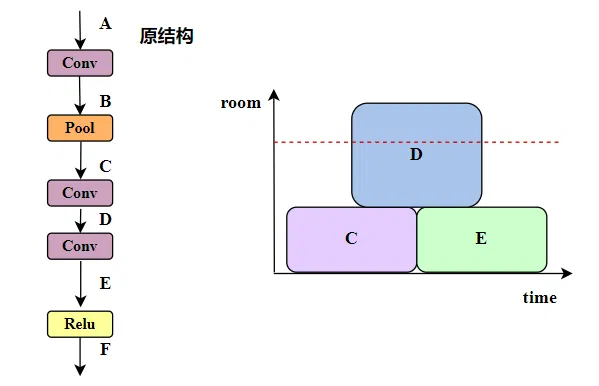
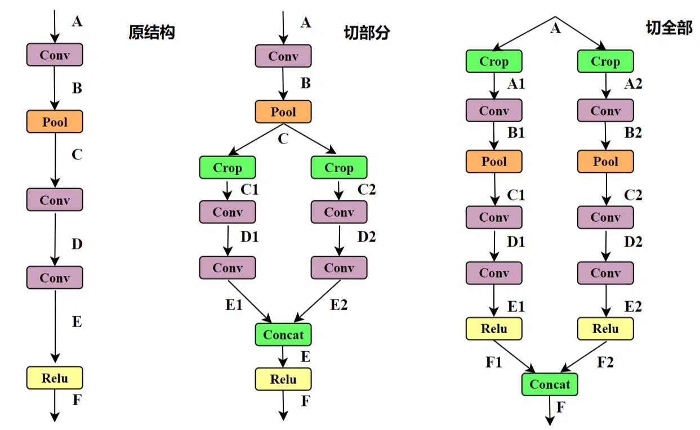
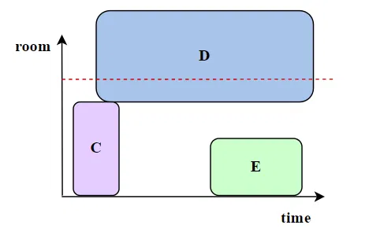
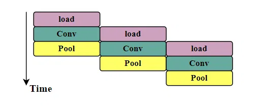
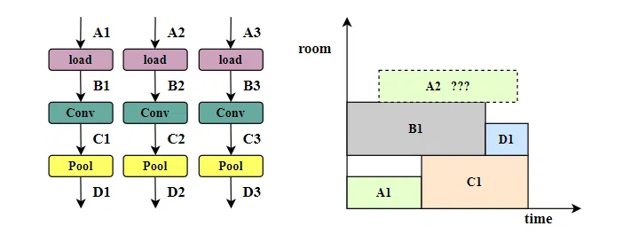
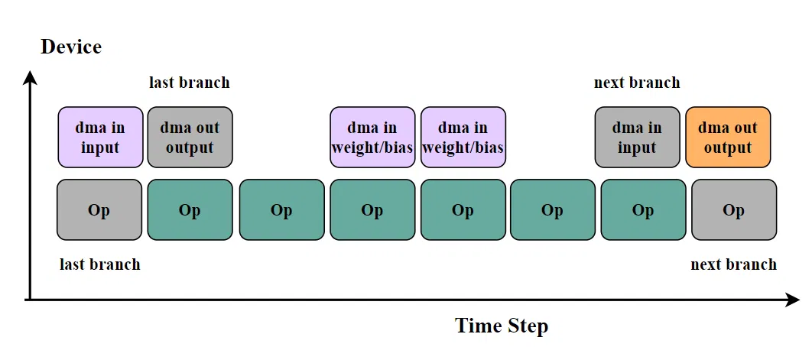
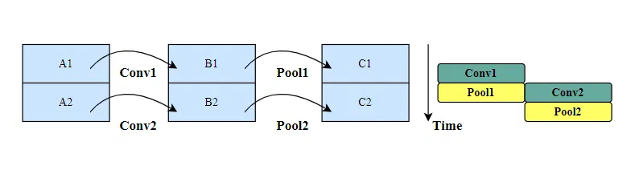
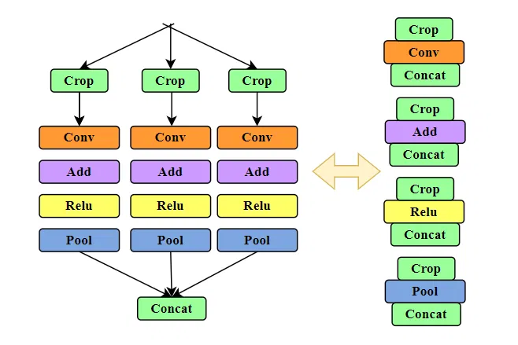
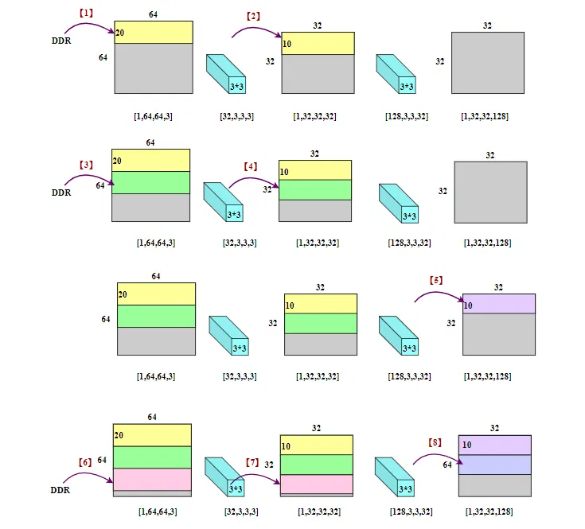

# 前言
NPU 的设计相对封闭，从市面上先进的 NPU 芯片和其工具链，乃至开发文档中，我只能学习到大方向的设计思路。这远远不够：1. 资料有限，有可能在大方向理解上出现偏差，这导致整个流程相当多的地方走不通或难度过大； 2. 细节上需要经验来自行领悟，细节不通也无法下手。
一些开源的项目，如 TVM、NVDLA、和 MLIR，这些工程和现在 NPU 芯片的编译器的优化思路差异很大。 前者强调通用性、可移植性。为多种硬件后端提供统一的编译堆栈，通过自动化搜索等搜寻最优调度。而专用 NPU 的硬件已经固定（可拓展也是固定硬件资源的拓展），专家根据硬件特性直接编写最优或近似最优的优化策略（如 Grouping 和 Tiling 策略）。
所以我觉得深入学习 TVM 和 MLIR 可能对当前的优化策略帮助有限（主观认为，学习 TVM 和 MLIR 很少，理解还很肤浅），当然主要原因还是精力有限、工程复杂、阅读源码困难等一系列原因。
再回到 Layergroup+tiling 的流程中来，流程中走不通或难度过大的问题，只能通过市面上已有的 NPU 产品的编译结果来猜测、推理流程中的问题。挺长时间以来，仍有不少疑惑，下面将一一介绍这几个问题。
相关链接： 【AI 编译】如何进行 layer-group 【AI 编译】张量生命周期管理 【AI 编译】layer-group 之后如何 tiling
作为初学者，错误在所难免，还望不吝赐教。
# tiling 范围是整个 group 还是部分？
当收到一个 layer group，发现其 tensor 在 SRAM 中放不下的时候，不得不进行 tiling。只对内存超出部分进行切分，还是整个 layer group 从头至尾进行切分？
以下面这个为例。最左边是该 group 的原始结构。

假设在分配内存时，发现内存在 tensor D 的位置不够用了，该怎样进行切分？有很多需要考虑的内容，如下图所示。

切部分还是切全部？
先看切全部的情况：当 group 无法在 SRAM 中完整存储时（如 Tensor D 超出了内存），即将 group 从头到尾进行切分。只需要考虑切分成多少块，从后往前推理出每个算子的 shape，重建该图结构就好了。例如图中将其切分成两个分支。
运行时，我们只加载一个分支，即将 Crop 之后的结果 A1 加载到 SRAM，将最终的结果 F1 store 回 DREAM，最后再 DRAM 中将 F1 和 F2 concat 起来。
这种方式简单直接，且必定会减少 SRAM 占用，SRAM 占用接近原占用的一半（超过）。它的缺点在于（从头到尾）切分的长度很长，我们知道切分的长度越长，切分的份数越多，额外的计算开销也就越大，以至于好多编译器选择 “当重复率超过 50% 时直接返回切分失败” 的做法。为减少内存搬运，group 越长越好，但是 tiling 又会导致更多的开销。
再看切部分的情况：（感觉市面上并没有人这么做，因为从没发现有人说，根据内存超出情况只对局部进行切分。）当 Tensor D 超出了内存时，只对 Tensor D 的局部算子进行切分，如上图中部，对和 Tensor D 相关联的两个 Conv 算子进行切分。
先确认一下 Crop 算子和 Concat 算子是如何执行的。
i. 如果 Crop 算子只是简单粗暴地将 C 中一半多的数据拷贝出来，Concat 算子将 E1 和 E2 拷贝到 E（C 和 C1C2 地址独立，E 和 E1E2 地址独立），那么此时的空间占用情况：B C; C C1; C C1 D1; C D1 E1; C E1 C2; …… 这种情况下内存占用减小得有限，比如 C C1 D1 同时存在，它占用的空间可能并不比 C D 小多少；频繁的内存开辟和释放，更容易导致空间不足（没有合适的内存块可供使用）；Crop 和 Concat 算子带来的时间延迟不可忽视。
ii. 上一种情况显然无法接受。所以在设计编译器时，Crop 和 Concat 算子不应该是数据拷贝，而是类似指针的东西。Crop 算子指向 C 中 C1 的 index 和 C2 的 index，卷积 conv 计算结果 E1 和 E2 直接存储在 E 的对应位置。 为了尽量让 C1 和 C2 的数据连续，数据排布最好采用 NHWC，只在 NH 维度进行切分（否则 SRAM 到 L0 之类的内存拷贝中还得注意数据的排布。）这种情况下，同时存在的 tensor 就变成 C D1 E; C D2 E；真正地减少了内存占用。
从以上分析来看，似乎部分切分更高效，但是切分部分的逻辑显然要比切全部要复杂，比如切分部分方法，真的非得切 tensor D 吗？1.tensor D 只是恰好被内存管理器分配到超出内存的位置，下次是 tensor C 或 tensor E 被分到这个位置，是不是就要切这两个 tensor 了？2.tensor D 被分配到超出内存的位置，这时候去切 Tensor C 或者 Tensor E，是不是也能降低内存占用？3. 还是说超出区域的所有 tensor C D E 全部都切？ 4. 一个 group 中出现大量的 tensor “超出 - 未超出 - 超出 - 未超出……” 组合，是均单独进行局部切分，还是将这个组合一块切分？一块切分的话，条件是什么？5. 实际应用中这种只有局部超出的情况多不多？6. 以下图中这种情况如何解决？只切 D 难以满足内存占用。7. 可能还有更复杂的情况。

# 空间足够时要不要 tiling？
之所以遇到这个问题，是因为一个误解（也许）。
NPU 芯片包含 Vector、MAC、Dma 等硬件，未充分利用这些硬件，需要让这些硬件尽量并行。如下，load 占用 DMA，Conv 占用 MAC，Pool 占用 Vector，理想情况下这些算子可以并行。

非 tiling 情况下，所有算子都是按照神经网络图结构的拓扑顺序串行的。所以非常自然得想到，是不是 tiling 之后得到的若干分支，可以进行上述的并行。
tiling 之后的分支相互独立，多个分支的指令同时发射到各个模块，再加以同步控制，就可以实现图中的并行效果。为了实现硬件并行，是不是空间足够的情况下，也对 group 进行 tiling？
由此带来的问题：1.tiling 成多少块？等于可并行的硬件数量？ 2.tiling 之后导致计算量的增加，是否影响硬件并行带来的收益？
# Tiling 之后片上要加载几个分支？内存分配怎么办？
同样为了利用硬件来并行，SRAM 上需要提前加载几个分支？
我们知道为了使 group 能够加载到 SRAM 上并运行，对 group 进行了 tiling 切分，SRAM 上加载一个分支没有问题。 但一个分支无法硬件并行……
算能 TPU 似乎只实现了多个等价分支的串行，及等价分支依次执行，没有并行。
好的，我们先假设多个等价分支能够并行。现在加载多个分支，那么 SRAM 空间还够不够？Tiling 的时候增大切分数量，切成更小的块？这会带来更多重复计算的问题，先不管。
现在 SRAM 上能加载多个分支，内存分配怎么办？假如加载了三个分支，需要为用到的 tensor 配置空间和生命周期，但是同一个分支的 tensor 有先后关系，可以管理内存分配和释放的时机。分支之间怎么办？以下图为例，三个相互独立的分支，已经顺利地为 A1 到 D1 分配好空间，之后 A2 的生命周期如何分配？ 不知道其生命周期，也就无法提前分配内存，SRAM 空间是否足够也就无从谈起。

分配内存的时候三个分支安排独立的空间？即第一个分支只能使用空间【099】，第二个分支使用空间【100199】，第三个分支使用空间【200~299】。每个分支占用自己独立的空间，互不影响，分支只需要考虑自己的独立空间如何分配就好。 这样确实解决了 Tensor 生命周期管理的问题，但是这样做不 “优美”，空间利用率也很低。
# Tiling 怎么做指令并行调度？

以上是 Tiling 能做的指令调度，尽管上图看起来并行似乎不错，但实际上只能实现 DMA 和 计算指令的并行调度，但是众多的计算指令中 MAC、Vector 等指令之间无法实现并行。并行度差强人意。
还是要总结一下，Tiling 存的问题：切分块数越多、跨越层数越多，产生的 tensor 重叠就越多，会引入大量的重复计算。另一个问题是指令并行调度，在 SRAM 中同时加载多个等价分支，在内存管理上存在困难。如果只加载一个分支，那么这个分支只能串行，只有 DMA 和计算指令能够并行，计算指令中 MAC、Vector 等指令之间无法实现并行。并行度不够高。
# 那么似乎不得不引入 Tile 指令并行调度？
那么 SRAM 似乎不能同时加载多个分支。SRAM 只加载一个。采用了这种算法的算能 TPU 似乎也是多个等价分支依次执行。
那怎么实现硬件并行？只能再切了，将 tensor 拆成更小的 tile。
所以现在的层次变成 ： Layergroup + Tiling + Tile。 三个层次。
Layergroup 横向截断图结构，Tiling 纵向切分 Tensor 使单个分支能够在 SRAM 运行，Tile 继续切分 Tensor 并优化调度实现硬件并行。
Tiling 和 Tile 是两种不同的操作：Tiling 切分成的分支是独立的，分支与分支之间没有关联，切分时需要考虑整个 group 的所有算子（Layer 逆推 shape）。而 tile 切分示意如下图所示，切分需要考虑的范围只有一个算子，如将 A 切分成 A1 和 A2，那么就需要两次 conv 计算，得到的 B1 和 B2 会立即拼接起来。 经过 Tile 切分，理论上就能实现硬件并行。

Tiling 和 Tile 的本质区别在于什么时候 Crop 和 Concat。如下图所示，Tiling 只在头尾处 Crop 和 Concat，Tile 相当于每个算子都 Crop 和 Concat。这里不赘述。

由此可见，Tile 是个非常灵活的操作，任何一层 Layer 都可以决定自己 Tile 的份数和大小，且没有增加额外的计算量。
但……Tile 看起来很简单？并不会。业界可能采用深度优先的方式对 Tile 进行调度，举例如下：

深度优先调度的原理，图中的带中括号 “【】” 的数字代表执行顺序。一图胜千言，我就不再描述了。
现在 NPU 往往还不是单核的，如果有多个 Core，则需要在 Tile 基础上进一步切分（这时候切分的可能是 W 、C 维度），将任务分发到多个 Core 中去。
# 去掉 Tiling？
Layergroup + Tiling + Tile 三个层次，其中两个都做切块，着实带来的不必要的复杂度，两个 Tiling 尽管思路完全不同，但本质上都是做拆分。
如非必要，勿增实体。Tile 切块和调度也能解决 SRAM 空间不足的问题，Tiling 层次应该毫不犹豫地去掉。
# 去掉 Layer Group？
将 Tile 指令生成、Tile 并行调度、内存管理、模拟仿真统一起来，同时为了有足够的、能够处理内存不足问题的工具，在调度算法里还引入了换出操作。
这样一来，我个人认为，Layer Group 似乎就没有存在的必要了。当然也可能是我理解较浅，但当前算法只在发现内存不足时，才引入换出操作，似乎已经覆盖了 LayerGroup 的功能。所以，Layer Group 也不需要了？
# 后记
本博客目前以及可预期的将来都不会支持评论功能。各位大侠如若有指教和问题，可以在我的 github 项目 或随便一个项目下提出 issue，并指明哪一篇博客，看到一定及时回复！